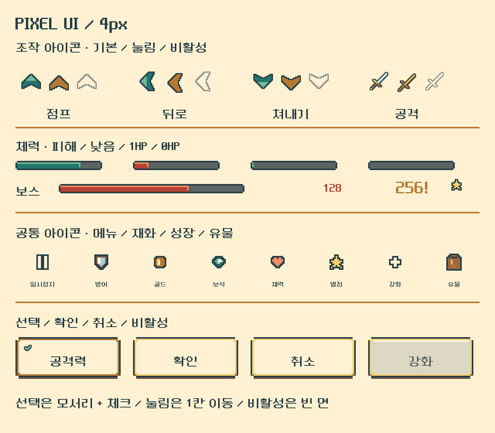

형태로 읽는 조작
위·뒤 회피와 아래 쳐내기는 배경 없는 계단형 화살표, 공격은 도트 검입니다. 눌렀을 때 한 칸 내려가고 내부 색면이 바뀝니다. 비활성은 회색 윤곽과 빈 내부로 구분합니다.
NEW · PIXEL UI V4
체력바·화살표·검·방패·일시정지·골드·보석과 공통 패널을 사각 픽셀로 다시 그렸습니다. 전투 아이콘과 테두리는 4px 단위, 글자는 원본 16px 글리프를 정수 배율로 확대합니다. 아이콘의 곡선·대각선도 계단 형태로 표현합니다.

위·뒤 회피와 아래 쳐내기는 배경 없는 계단형 화살표, 공격은 도트 검입니다. 눌렀을 때 한 칸 내려가고 내부 색면이 바뀝니다. 비활성은 회색 윤곽과 빈 내부로 구분합니다.
플레이어 청록·적 산호색에 진한 외곽선과 밝은 윗면을 적용합니다. 줄어드는 길이는 4px 단위이며 체력이 남아 있으면 최소 한 칸을 표시합니다. 0HP에서만 완전히 비웁니다.
Stage·일시정지 패널, 여관의 탭·확인 버튼, 유물 선택 테두리에도 꺾인 모서리와 평면색을 씁니다. 선택된 항목은 체크를 함께 표시하고, 피해 숫자와 치명타도 도트 글꼴로 구별합니다.
HP의 가로 중심과 터치 크기는 유지하고, 방향키 위치만 레퍼런스의 실제 게임 영역 비율로 맞췄습니다. 점프 (144,507) · 뒤로 (71,613) · 쳐내기 (190,641), 1280×720 기준입니다. 체력바는 같은 세로 중심에서 16→24px로 두꺼워졌습니다. 타이밍 원호도 계단형으로 바꾸되 판정 수치·입력 방식은 바꾸지 않습니다. 눌림·비활성·피해 숫자는 정적 상태 시안이며 런타임 동작을 구현한 것이 아닙니다.